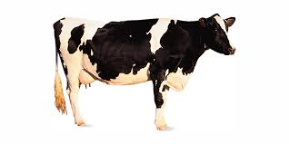

Introduction: the cow is a domestic animal. She is more useful then all other animals that are used as a domestic animals.
Description: Everybody knows what a cow looks like is, but there are different kinds of cows.
The cows of our country are a small animal,with a hump on its neck. An australian cow gives many times as much milk as a cow of our country.

The cow is four-footed animal. Her large body is covered with dhort hair. She had a long head,two eyes,two ears,two horns and a long tail.
There is a tuft of hair at the end of her tail. She can easily drive away flies and mosquitoes with her tail. There is only one set of teeth in her lower jaw.
Her hoofs are cloven.
Kinds and where found: Cows are found almost all over the world. They are of many colors. Some are red,some are white,some are black and some are of mixed colors. They differ in size from one country to another.
Food: the cow lives on grass,straw,oil cakes,rice gruel,bran,and vegetables. She chews the cud.
Nature: The cow is a gentle and mild animal by nature. She gives birth to only one culf at a time.She loves her very much, though the cow ic very wild and gentle, he keeps her enemies away with her horns.
Usefullness: the cow is a very useful animal. She gives us milk. Cow’s milk is a perfect food. From milk, we can get butter, ghee, curd, and cheese. Many kinds of sweets are made of it. Cow-dung can be made into a good manure. It is also used as fuel. Shoes, bags, and suitcases are made of her hide. Combs and buttons are made of her bones and horns. In some countries, bulls and bullocks are used in drawing plow and carts.
Conclusion: the cow comes to our services in many ways. We should be kind to her and take proper care.